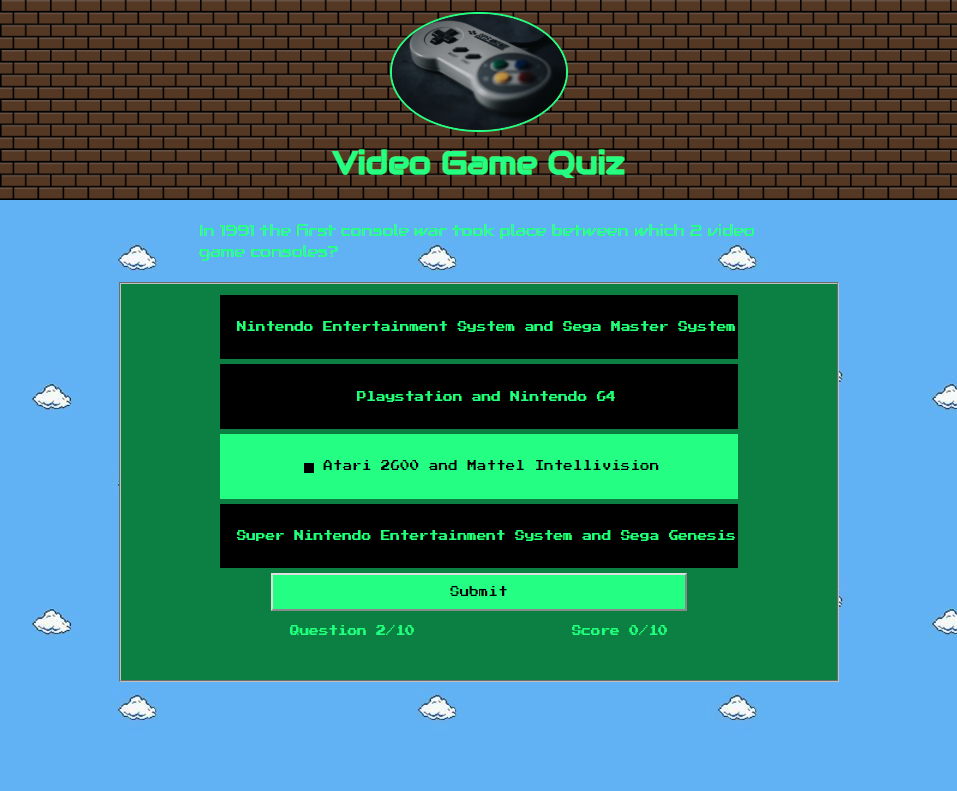

Projects
News Analyzer
The purpose of this application is to provide an easier way to get informed, it analyzes any given article and separates its sentences and words and thru a series of algorithms it returns a reduced version of the text, a reading of the article's sentiment (ideally, for a more objective point of view, ther reading should be neutral) and finally a list of wikipedia links to the article's most important mentions. It utilizes: HTML5, JavaScript and Jquery.Links to the repository for this project:
News Analyzer repository
And the live GitHub site:
News Analyzer
Retro Video Game Quiz
 With this web application, you can test your knowledge on classic video games and consoles, it provides feedback after each question and at the end of it. Because of its responsive design it can be viewed in virtually any device. It utilizes: HTML5, JavaScript and Jquery.Links to the repository for this project:
Video game quiz repository
And the live GitHub site:
Video Game Quiz